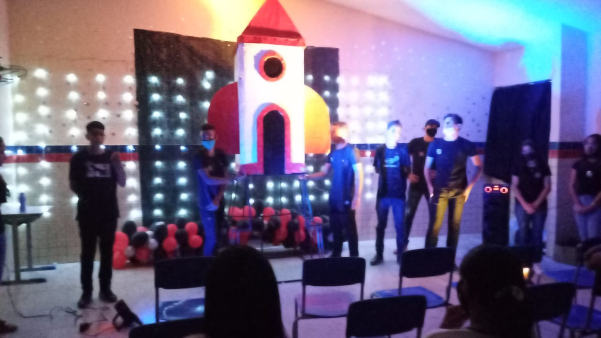

Sobre o Projeto

Pensando na riqueza de conhecimento que a astronomia pode proporcionar aos alunos do fundamental este projeto visa despertar o interesse desse público pelo estudo da Astronomia.
Nessa fase as crianças são naturalmente curiosas, questionadoras e buscam entender o mundo a sua volta. Para Piaget (1982) é nessa curiosidade e na indagação, que as crianças vão adquirindo conhecimentos e se desenvolvem. Partindo dessa ideia, a cúpula observatório vem para instigar as crianças a investigar o universo.
Apresentações

1º lugar - FECEAL
2019
Professor Destaque EXPERIMENTAL
2019

FENECIT
2021
Composição
Objetivo
Pensando na riqueza de conhecimento que a astronomia pode proporcionar aos alunos do fundamental 1 este projeto visa despertar o interesse desse público pelo estudo da Astronomia. Nessa fase as crianças são naturalmente curiosas, questionadoras e buscam entender o mundo a sua volta. Para Piaget (1982) é nessa curiosidade e na indagação, que as crianças vão adquirindo conhecimentos e se desenvolvem. Partindo dessa ideia a cúpula observatório vem para instigar as crianças a investigar o universo.
Materiais
Foi pensado em diversos materiais para a elaboração do projeto, surgiu então, a ideia de trabalhar com o papelão,material reciclado e de fácil acesso, e para auxiliar na montagem da cúpula, cola branca, tinta acrílica, bolas de isopor (planetas da parte interna), fios e materiais básicos de artesanato.
Exposição